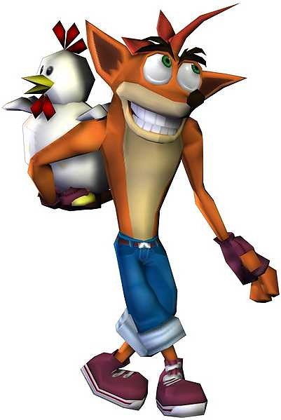

Crash Bandicoot is primarily a platforming series. The goal of each level is to guide Crash from the beginning to the end, travelling either into the screen, towards the player or left and right in a side-scrolling manner. Several levels place Crash in unique situations which require the use of motorbikes, jet skis, submarines and various wild animals to complete the level.  In the original Crash Bandicoot, Crash's move-set is rather limited; he can run, jump and spin his way through treacherous environments and hostile creatures. Cortex Strikes Back introduces several new moves for Crash to utilize, including a high jump, high spin jump, body slam and slide attack. Warped expands on this by awarding the player with new abilities after each boss is defeated, which was carried over to The Wrath of Cortex. The player can also spin and slide at the same time when pressing the right buttons.